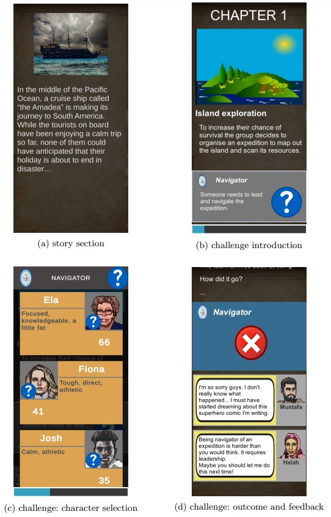

项目经验 ▼
开发者 / （进行中）交互式t-SNE优化过程可视化，代尔夫特理工大学
2023年6月 — 现在
t-SNE是一种强大的基于邻域的非线性降维算法，适用于从高维数据中提取复杂的结构和聚类。t-SNE广泛适用于一般的高维数据：例如，研究者已经使用它处理流式细胞仪数据， 并且通过聚类结果佐证细胞类别的判定。t-SNE聚类的形成过程甚至被用来推断细胞分化过程。然而，即使具备丰富的信息，t-SNE聚类的形成（即算法的优化过程）较少被研究。 此项目设计了一款通用的视觉分析系统，其焦点集中在类似 t-SNE 的降维算法的优化过程上，为高维数据的深入探索提供了一种连贯而深刻的体验。 通过概念化并设计一系列多样化的视觉表达，根据人类视觉感知和认知进行定制，该系统适用于各种类型的高维数据。 为了验证论文中提出的细胞分化假设，我们引入了一个交互式机制，用于可视化分析和处理超过40,000个高维流式细胞样本，这些样本来自最新研究。 目前，我们正将开发的系统无缝集成到名为ManiVault Studio的开源可视化分析框架中，以拓展交互式高维数据分析功能。项目组领导者 / 基于图的协同过滤推荐系统异常检测，代尔夫特理工大学
2023年4月 — 2023年7月
 推荐系统对于基于用户偏好发现新内容至关重要，依赖于现有评分系统。在协同过滤中，计算用户相似性以获得可靠的建议，存在恶意行为的可能性。
此项目调整了以检测社交网络异常的Core-A算法，以识别用户-项目二分图中的虚假攻击。所提出的Core-AB算法为节点计算DMP分数，
通过修改，如合并边缘、探索排名策略，并考虑基于最密子图的方法（DSM），解决了一些涉及二分图结构限制。
项目的贡献在于将Core-A调整为二分图，展示在检测虚假攻击方面的有效性，能够改善在线系统中的信任问题。
在项目开发过程中，我领导项目组进行面向协同过滤的异常检测系统的研究和设计，实现了多种攻击策略以模拟非法用户行为，拓展了现有研究，
提出用于二分图异常检测的core-AB算法。该系统准确检测到4种攻击策略中的3种，在较大范围内具有超过0.9的F1分数。
推荐系统对于基于用户偏好发现新内容至关重要，依赖于现有评分系统。在协同过滤中，计算用户相似性以获得可靠的建议，存在恶意行为的可能性。
此项目调整了以检测社交网络异常的Core-A算法，以识别用户-项目二分图中的虚假攻击。所提出的Core-AB算法为节点计算DMP分数，
通过修改，如合并边缘、探索排名策略，并考虑基于最密子图的方法（DSM），解决了一些涉及二分图结构限制。
项目的贡献在于将Core-A调整为二分图，展示在检测虚假攻击方面的有效性，能够改善在线系统中的信任问题。
在项目开发过程中，我领导项目组进行面向协同过滤的异常检测系统的研究和设计，实现了多种攻击策略以模拟非法用户行为，拓展了现有研究，
提出用于二分图异常检测的core-AB算法。该系统准确检测到4种攻击策略中的3种，在较大范围内具有超过0.9的F1分数。
项目组领导者 / 可视化工具 "PowerViz"，代尔夫特理工大学
2022年11月 — 2023年1月
力量举是一项全球性的强度运动，涉及以预定方式举起杠铃，包括深蹲、卧推和硬拉三个组成部分。 尽管它表面上看起来是一项纯粹的力量运动，但知识、编程和分析扮演着至关重要的角色。 此项目专注于力量举运动员的表现提升，利用Open Powerlifting的比赛数据集构建了一个可视化工具。 此项目尝试解决了两个领域问题： 如何检查和追踪运动员的表现并将其与整体人口进行比较、哪些地区提供了最佳的个人发展环境？ 在项目开发过程中，我领导项目组使用D3、JavaScript、HTML和CSS构建了一个Web可视化工具，用于识别和监测举重运动员的表现。 实现了散点图、箱线图和世界举重地图以分析所有的荷兰的力量举运动员数据，用于数值型和类别型数据，为用户提供了高交互性和 定位数据点、发现和探索数据分布、识别趋势、比较特征和相似性的自由。项目组领导者 / 无人机市场分析ATMOS UAV，代尔夫特理工大学
2022年4月 — 2022年7月
 在代尔夫特理工大学就读期间，我与团队同科技、政策与管理学院合作，对初创公司ATMOS UAV进行了详细分析。
ATMOS是一家技术先进的地理空间创业公司，由一支年轻、创新和专注解决问题的团队支持，总部位于荷兰的莱顿市。
他们专注于高质量、符合行业标准的测量和制图垂直起降（VTOL）无人机，能够在最恶劣的天气条件下操作。
我们研究了ATMOS的机会分析和价值主张、讨论了ATMOS的学术衍生品、成长阶段和扩散模式、考察了他们面临的关键转折点以及最有前途的细分市场、研究了他们可持续和循环商业模型。
研究产出了机会分析画布、价值主张画布和可持续商业模型画布和详尽的分析报告与演说。此项工作提升和展示了我对于涉及研究团队新技术开发的调研能力、数据分析能力和可视化能力。
在代尔夫特理工大学就读期间，我与团队同科技、政策与管理学院合作，对初创公司ATMOS UAV进行了详细分析。
ATMOS是一家技术先进的地理空间创业公司，由一支年轻、创新和专注解决问题的团队支持，总部位于荷兰的莱顿市。
他们专注于高质量、符合行业标准的测量和制图垂直起降（VTOL）无人机，能够在最恶劣的天气条件下操作。
我们研究了ATMOS的机会分析和价值主张、讨论了ATMOS的学术衍生品、成长阶段和扩散模式、考察了他们面临的关键转折点以及最有前途的细分市场、研究了他们可持续和循环商业模型。
研究产出了机会分析画布、价值主张画布和可持续商业模型画布和详尽的分析报告与演说。此项工作提升和展示了我对于涉及研究团队新技术开发的调研能力、数据分析能力和可视化能力。
开发者 & UI设计师 / 严肃游戏 "Stranded"，代尔夫特理工大学
2021年11月 — 2022年2月
 对不同群体的潜在偏见在我们社会的许多领域中越来越受到关注。认识到这些偏见是一项困难的任务，因为偏见是潜意识的，以及被回避的。 我们提出了一款名为《Stranded》的严肃游戏，玩家在其中被引导去揭示和认识可能存在的直观偏见。 玩家面临着受现实世界中诱发偏见情境启发的挑战，在这些情境中，他们必须在有限的时间和知识下为认为适合特定任务的人分组，而这是在一个团队生存的背景下进行的。 每轮结束后，通过小提示透露出每个任务的理想人选；最终，如果玩家忽略这些提示并依赖先前的偏见，他们将无法在挑战中生存下来。 这激励玩家更深入地考虑角色的内在优势，而不是先前的偏见。《Stranded》是引发有趣课堂讨论的有效工具，通过匿名收集所有玩家的决策，并显示每项任务的综合结果， 很容易引发有关某些决策动机的对话。《Stranded》的评估表明，它有效地促使玩家做出带有偏见的判断，并且相当一部分玩家在玩游戏后感到更加意识到他们的偏见。 在此项目中，我参与构思并实现了一个交互式的严肃游戏，贡献了产品的数据展示逻辑，完善了UI组件，保障了功能的无缝集成。 我还积极推进敏捷开发迭代过程，专注于优化用户交互，通过持续的改进和可用性测试增强了整体用户体验。最终项目在 ISAGA2022 会议上正式展示。研究助理 / 基于孪生卷积神经网络的虹膜识别，中央财经大学，北京
2019年10月 — 2020年3月
在此项目中，我设计并构建了一个孪生卷积神经网络（CNN），利用自采集的虹膜数据，展示了一个有效的生物特征识别系统。 由于采集到的数据是原始、无标记的，我为数据标记步骤开发了一个用户友好的前端应用：采用了 HTML、 JavaScript和 Django 的组合， 产出了一个交互式、视觉上直观的图形用户界面，确保了高效的数据标注。 最后，通过PyTorch和OpenCV实现虹膜识别。